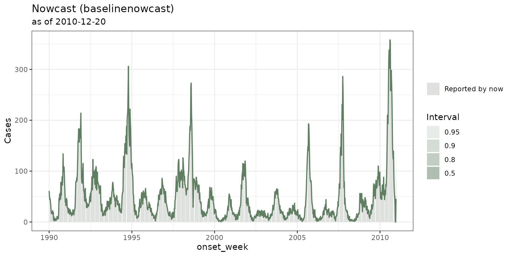
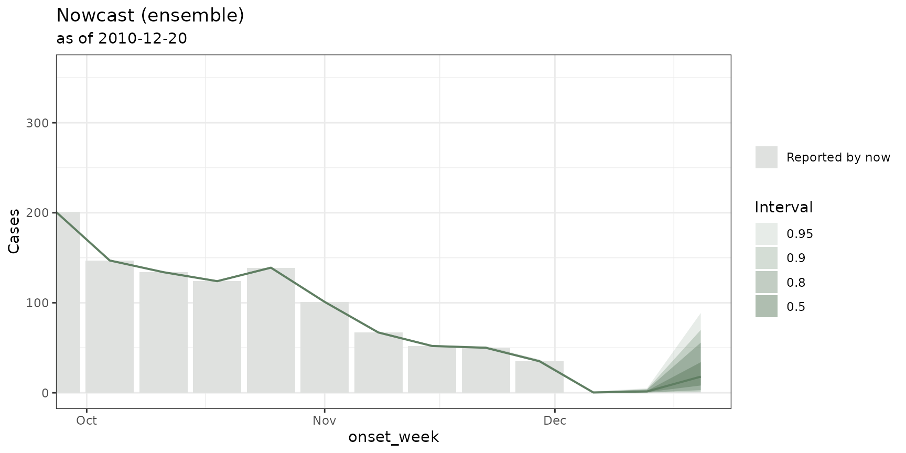

Fitting models from different nowcasting frameworks, backtesting and building an ensemble
Source:vignettes/articles/ensemble-nowcasting.Rmd
ensemble-nowcasting.RmdWhy this vignette?
This vignette is about how to run nowcasts from different
R packages all within the same tbl_now
framework as well as on how to backtest and do ensembles.
Here we describe how to:
- Use
engine_*()to setup the model and its arguments, - Fit any model with
run_nowcast(x, engine). - Build backtest with
nowcast_backtest()to evaluate your models. - Use
nowcast_ensemble()to combines several models into an ensemble model.
There are two ways to do the same. You can either
use run_nowcast(x, engine_epinowcast()) to use the same
call for any nowcast (this is what this vignette explains).
Alternatively you can use the converters to use the original method from
the specific package:
tbl_now_to_epinowcast(x) |> epinowcast::epinowcast() Ideally you should:
Use the converter (
tbl_now_to_*) when you want to pass that package’s own arguments, inspect what it was handed, or do something thetbl.nowbackend does not.Use
run_nowcast()when you want several models that can be compared vianowcast_backtest()andnowcast_ensemble().
The examples below use denguedat: a weekly line
list of dengue cases in Puerto Rico:
dengue <- denguedat |>
tbl_now(
event_date = onset_week, #symptom onset
report_date = report_week, #when it was reported
verbose = FALSE
)
dengue
#> # A tibble: 52,987 × 6
#> # Data type: "linelist"
#> # Frequency: Event: `weeks` | Report: `weeks`
#> onset_week report_week gender .event_num .report_num .delay
#> <date> <date> <chr> <dbl> <dbl> <dbl>
#> [event_date] [report_date] [...] [...] [...] [...]
#> 1 1990-01-01 1990-01-01 Male 0 0 0
#> 2 1990-01-01 1990-01-01 Female 0 0 0
#> 3 1990-01-01 1990-01-01 Female 0 0 0
#> 4 1990-01-01 1990-01-08 Female 0 1 1
#> 5 1990-01-01 1990-01-08 Male 0 1 1
#> # ────────────────────────────────────────────────────────────────────────────────────────────────────────────────────────────────────────────────────────────────
#> # Now: 2010-12-20 | Event date: "onset_week" | Report date: "report_week"
#> # ────────────────────────────────────────────────────────────────────────────────────────────────────────────────────────────────────────────────────────────────
#> # ℹ 52,982 more rowsThis tutorial requires installation of baselinenowcast, NobBS and surveillance. You can do it as:
install.packages(c("baselinenowcast","surveillance","NobBS"))1. Fitting a nowcast
The run_nowcast() function takes two arguments: the
tbl_now, and an engine():
#Here we run a baselinenowcast as an example with very few draws
#because its a tutorial
baseline <- dengue |>
run_nowcast(engine_baselinenowcast(draws = 100))
baseline
#> ── A <tbl_nowcast> from method "baselinenowcast" ───────────────────────────────────────────────────────────────────────────────────────────────────────────────
#> • now: "2010-12-20"
#> • event dates: 1095
#> • quantile levels: 0.025, 0.05, 0.1, 0.25, 0.5, 0.75, 0.9, 0.95, and 0.975
#> • draws: 100
#>
#> Nowcast at "2010-12-20" (q50, 2.5-97.5% interval):
#> • 45.5 [5, 202.4]
#>
#> # A tibble: 6 × 3
#> onset_week .quantile_level .value
#> <date> <dbl> <dbl>
#> 1 1990-01-01 0.025 61
#> 2 1990-01-01 0.05 61
#> 3 1990-01-01 0.1 61
#> 4 1990-01-01 0.25 61
#> 5 1990-01-01 0.5 61
#> # ℹ 1 more row
#> ℹ 9849 more rows. Use `as_tibble()` for all of them.An engine includes the model and all of its arguments. For
example, engine_baselinenowcast() names
baselinenowcast::baselinenowcast()’s own arguments. For
example in the previous case we modified the number of draws which is an
argument from baselinenowcast::baselinenowcast():
engine_baselinenowcast(draws = 1000)
#> ── <nowcast_engine: "baselinenowcast"> ─────────────────────────────────────────────────────────────────────────────────────────────────────────────────────────
#> • quantile levels: 0.025, 0.05, 0.1, 0.25, 0.5, 0.75, 0.9, 0.95, and 0.975
#> • arguments: draws and strata_sharingYou can call list_nowcast_methods() to see all the
methods available in this package
list_nowcast_methods()
#> [1] "baselinenowcast" "diseasenowcasting" "EpiNow2" "epinowcast" "example" "NobBS" "surveillance"In general each of the methods for the engine() requires
you to install the corresponding package. You can only use those you
have installed.
How much history to fit on: min_date
In general not all nowcasts can fit all of the same data fast enough to be useful. As a rule of thumb:
-
diseasenowcastingcan take the whole series and produce a nowcast in less than a minute. -
baselinenowcastcan take all of the event dates however one usually has to truncate the number of delays in the delay distribution. -
epinowcast,EpiNow2,surveillanceandNobBSall require an event-window so that for a long time series not all event dates are passed. You can use themin_dateargument to select the size of the window for the engine.
run_nowcast(dengue, engine_epinowcast(min_date = 20))For backtesting and ensembles it is important to utilize the
min_date in the engine so that the backtest knows to
truncate the data to the last min_date periods for every
single test.
2. Cleaning and evaluating the nowcast
Every method called by run_engine returns a
tbl_nowcast which can be cleaned with
tidy:
tidy(baseline)
#> # A tibble: 1,095 × 7
#> event_date stratum estimate conf.low conf.high level engine
#> <date> <chr> <dbl> <dbl> <dbl> <dbl> <chr>
#> 1 1990-01-01 all 61 61 61 0.95 baselinenowcast
#> 2 1990-01-08 all 50 50 50 0.95 baselinenowcast
#> 3 1990-01-15 all 44 44 44 0.95 baselinenowcast
#> 4 1990-01-22 all 46 46 46 0.95 baselinenowcast
#> 5 1990-01-29 all 39 39 39 0.95 baselinenowcast
#> # ℹ 1,090 more rowsor visualized with autoplot():
autoplot(baseline)
If enough cases have been observed so that the “truth” is settled,
one can use the score_nowcast() function which compares the
predictive quantiles with a resolved truth table using the weighted
interval score (WIS) of Bracher et al. (2021), plus the absolute error of the
median and the 50% and 90% interval coverage:
score_nowcast(baseline, truth = dengue)
#> # A tibble: 1,095 × 7
#> .method onset_week .observed wis ae_median coverage_50 coverage_90
#> <chr> <date> <dbl> <dbl> <dbl> <lgl> <lgl>
#> 1 baselinenowcast 1990-01-01 61 0 0 TRUE TRUE
#> 2 baselinenowcast 1990-01-08 50 0 0 TRUE TRUE
#> 3 baselinenowcast 1990-01-15 44 0 0 TRUE TRUE
#> 4 baselinenowcast 1990-01-22 46 0 0 TRUE TRUE
#> 5 baselinenowcast 1990-01-29 39 0 0 TRUE TRUE
#> # ℹ 1,090 more rowsor more directly one can use the package:
baseline |>
scoringutils::as_forecast_quantile(truth = dengue) |>
scoringutils::score()
#> onset_week model wis overprediction underprediction dispersion bias interval_coverage_50 interval_coverage_90 ae_median
#> <Date> <char> <num> <num> <num> <num> <num> <lgcl> <lgcl> <num>
#> 1: 1990-01-01 baselinenowcast 0.00000000 0.00000 0 0.00000000 0 TRUE TRUE 0.0
#> 2: 1990-01-08 baselinenowcast 0.00000000 0.00000 0 0.00000000 0 TRUE TRUE 0.0
#> 3: 1990-01-15 baselinenowcast 0.00000000 0.00000 0 0.00000000 0 TRUE TRUE 0.0
#> 4: 1990-01-22 baselinenowcast 0.00000000 0.00000 0 0.00000000 0 TRUE TRUE 0.0
#> 5: 1990-01-29 baselinenowcast 0.00000000 0.00000 0 0.00000000 0 TRUE TRUE 0.0
#> ---
#> 1091: 2010-11-22 baselinenowcast 0.05555556 0.00000 0 0.05555556 0 TRUE TRUE 0.0
#> 1092: 2010-11-29 baselinenowcast 0.13625000 0.00000 0 0.13625000 0 TRUE TRUE 0.0
#> 1093: 2010-12-06 baselinenowcast 0.00000000 0.00000 0 0.00000000 0 TRUE TRUE 0.0
#> 1094: 2010-12-13 baselinenowcast 0.11111111 0.00000 0 0.11111111 0 TRUE TRUE 0.0
#> 1095: 2010-12-20 baselinenowcast 24.06319444 15.86667 0 8.19652778 1 FALSE FALSE 45.5Because the dataset ends at rget_now(dengue)` and we
nowcasted for that date the scores are not very useful here (we don’t
know how many cases arrived eventually). A better option is to
perform a backtest to evaluate historical performance as the dataset
knows how many cases have already settled from dates in the past.
3. Backtests and ensembles
Models fail in different directions and combining them cancels part of that. An ensemble combines multiple nowcasting for robustness. To build an ensemble one has to specify different engines, backtest them and then build the ensemble.
Here for example we will create an ensemble from NobBS,
and two baselinenowcast options. It is important to utilize
the label argument when using the same engine with
different parameters:
#NobBS
model1 <- engine_nobbs(min_date = 52, max_D = 15, label = "NobBS")
#baselinenowcast
model2 <- engine_baselinenowcast(max_delay = 15, label = "baselinenowcast")
#a baselinenowcast model with a different specification
model3 <- engine_baselinenowcast(max_delay = 10, prop_delay = 0.75, label = "baselinenowcast 2")Once the models are specified we can backtest through several past dates:
#We evaluate the performance of our models in 2 past dates
#in real life change n_dates to a bigger number (we use 2 for the tutorial)
models_backtest <- dengue |>
nowcast_backtest(model1, model2, model3, n_dates = 2)
#> ℹ Backtesting "NobBS" at 2010-11-15.
#> ℹ Backtesting "baselinenowcast" at 2010-11-15.
#> ℹ Backtesting "baselinenowcast 2" at 2010-11-15.
#> ℹ Backtesting "NobBS" at 2010-11-22.
#> ℹ Backtesting "baselinenowcast" at 2010-11-22.
#> ℹ Backtesting "baselinenowcast 2" at 2010-11-22.The backtest now gives us enough information to evaluate each of the models:
models_backtest |>
scoringutils::as_forecast_quantile(truth = dengue) |>
scoringutils::score() |>
scoringutils::summarise_scores()
#> model wis overprediction underprediction dispersion bias interval_coverage_50 interval_coverage_90 ae_median
#> <char> <num> <num> <num> <num> <num> <num> <num> <num>
#> 1: NobBS 0.66998397 0.501068376 0.03418803 0.13472756 0.033653846 0.9326923 0.9711538 1.08653846
#> 2: baselinenowcast 0.02820801 0.001528351 0.01426461 0.01241505 -0.006373223 0.9926639 0.9940394 0.04332875
#> 3: baselinenowcast 2 0.18177964 0.001477406 0.16862805 0.01167418 -0.131957818 0.8670335 0.8674920 0.19669876Once the historical evaluation is performed one needs to fit each of
the models individually and then can put them together into a
nowcast_ensemble along its backtest. The ensemble will then
average all the models in a way that optimizes the WIS (if
weights = "optim" or proportional to the WIS if
weights = "inverse_score").
#We fit each of the individual models
nowcast1 <- dengue |> run_nowcast(model1)
#> NOTE: Stopping adaptation
nowcast2 <- dengue |> run_nowcast(model2)
nowcast3 <- dengue |> run_nowcast(model3)
#And then ensemble to optimize for the best WIS
ensemble_nowcast <-
nowcast_ensemble(nowcast1, nowcast2, nowcast3,
weights = "optim", backtest = models_backtest)One can visualize the ensemble with autoplot() or get
its results with tidy() as in the case of a regular
nowcast.

4. Adding your own model
You can add any model built by yourself or from any other package to
the fitting so that it has its own engine, its own tidy to clean and can
be used in conjunction with tidy(), autoplot()
as well as the backtesting and ensemble methods. You can read more about
it in the
corresponding article.
If you have any questions or comments regarding the contents of this article please open an issue on Github.
Learning more
- A tutorial on real life surveillance data. Takes you from cleaning to diagnosing errors in the data to nowcasting: https://rodrigozepeda.github.io/tbl.now/articles/example.html
- The second part of the tutorial with a revision process: the optional third date, where a reported case is later confirmed, retracted or left pending: https://rodrigozepeda.github.io/tbl.now/articles/example_revisions.html
- The Get started vignette: the whole workflow, from a raw line list to a scored nowcast, in five minutes: https://rodrigozepeda.github.io/tbl.now/articles/tbl.now.html.
-
More on the
tbl_nowobject: every attribute, the three data types, the revision process, temporal effects and thedplyrmethods: https://rodrigozepeda.github.io/tbl.now/articles/more-on-tbl-now.html - More thoughts on diagnosing your dataset with
tbl.nowhttps://rodrigozepeda.github.io/tbl.now/articles/diagnosing-a-tbl-now.html - Detecting reporting batches with
tbl.nowhttps://rodrigozepeda.github.io/tbl.now/articles/batches.html - How to use different nowcasting engines from
tbl.now: here you can learn how it connects to the other nowcasting packages. https://rodrigozepeda.github.io/tbl.now/articles/nowcasting-models.html - How to nowcast with multiple engines, backtest and ensemble nowcasts. https://rodrigozepeda.github.io/tbl.now/articles/ensemble-nowcasting.html
- Adding your own custom nowcasting model https://rodrigozepeda.github.io/tbl.now/articles/custom-nowcast-models.html
- Package reference: https://rodrigozepeda.github.io/tbl.now/reference/